Escuela de Ingeniería Química · UCR
Bombas centrífugas
Cómo leer las curvas del fabricante y seleccionar una bomba
IQ-0432 · Laboratorio de Ingeniería Química · II ciclo 2026
El reto de hoy
Hay que bombear
16 m³/h a 19 m.
Dos bombas del catálogo sirven. ¿Cuál compraría, y con qué motor?
Al final de la clase lo resolvemos con el catálogo DAB KDN.
2
Temas principales
De las curvas a la selección
1
Temas adicionales
Variaciones en impulsores y bombas centrífugas
2
Repaso: curva característica
Puntos de máxima eficiencia
3
Repaso: curva del sistema
Punto de operación
4
Diagramas del fabricante
Tipos de gráficos comunes y cómo leerlos
5
Selección de una bomba
Ejemplo guiado, en conjunto
6
Trabajo en clase
Caso de estudio en grupos
3
Parte 1 de 6
¿Qué cambia de una centrífuga a otra?
Tipo de impulsor, succión y número de etapas
4
Algunas variaciones · Impulsor
El cerrado es más eficiente; el abierto tolera sólidos
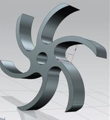
Abierto
Álabes sin tapas laterales. Tolera sólidos en suspensión; menor eficiencia.
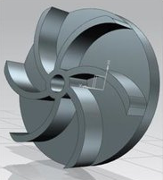
Semiabierto
Una sola tapa, en la cara posterior. Término medio entre ambos.
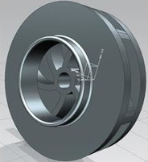
Cerrado
Álabes entre dos tapas. Mayor eficiencia; para líquidos limpios.
Imágenes: Faraji et al. (2022), figura 1 (paneles a, b y d), vía ResearchGate.
5
Algunas variaciones · Succión
La doble succión reparte el caudal entre dos entradas
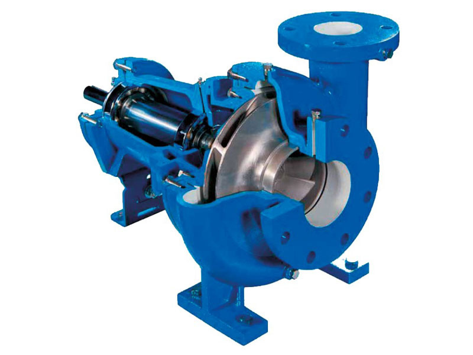
Succión única
El fluido entra por una cara del impulsor.
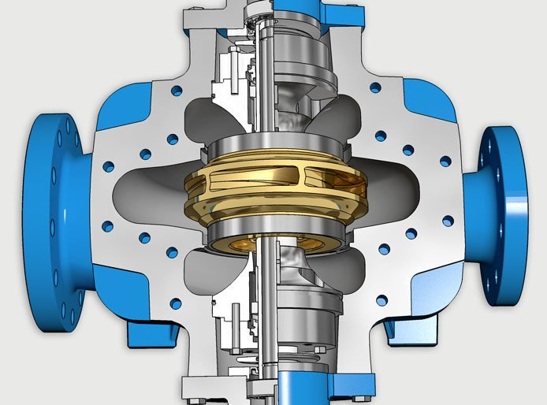
Succión doble
El fluido entra por ambas caras del impulsor.
Imágenes: Seguas (bomba radial de succión única) y Neptuno Pumps (bomba de doble succión, carcasa partida).
6
Algunas variaciones · Etapas
Una multietapa son bombas en serie en una sola carcasa
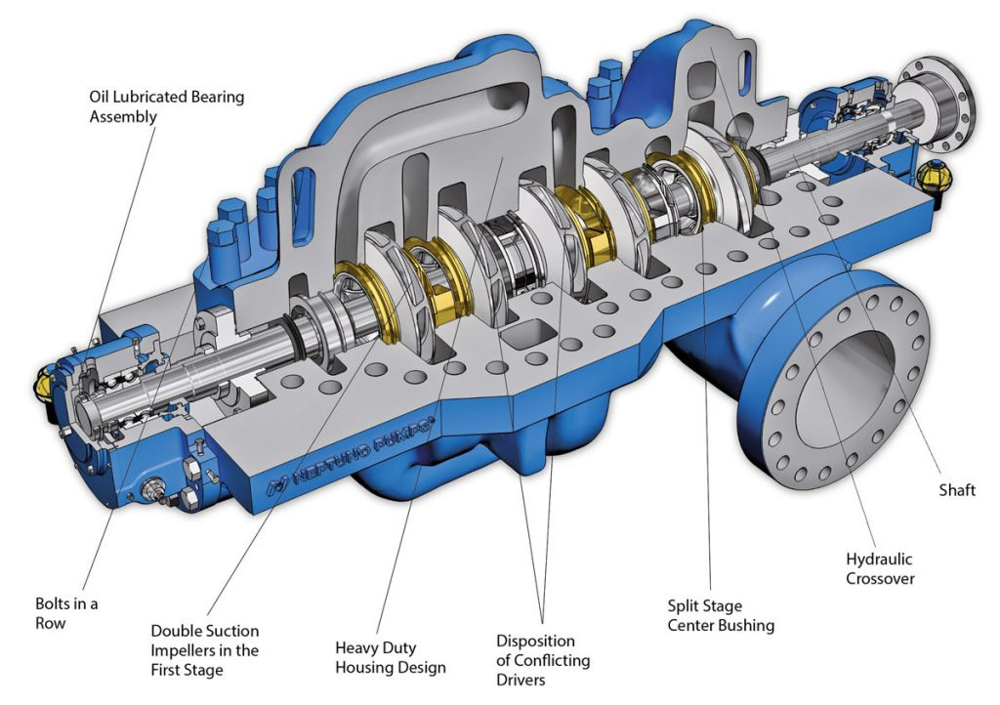
Etapa única
Un impulsor entrega toda la cabeza.
Multietapa
Varios impulsores en serie sobre el mismo eje: el caudal es el mismo y las cabezas se suman.
Imagen: Neptuno Pumps, esquema de bomba multietapa de carcasa partida.
7
Parte 2 de 6 · Repaso
¿Dónde le conviene trabajar a una bomba?
Repaso: curva característica y punto de máxima eficiencia
8
Curva característica
La cabeza, la eficiencia y la potencia comparten el eje del caudal
Eje x
Caudal o capacidad, Q
Eje y
Cabeza total, H
Eficiencia, η
Potencia al freno, bhp
La bomba es una centrífuga ficticia. Las del módulo son periféricas: su potencia baja al aumentar el caudal.
9
Curva característica
Conviene operar cerca del BEP
BEP
Cada diámetro de impulsor tiene su BEP; al unirlos se obtiene la línea de mejor eficiencia.
En la práctica
Operar entre 70 % y 120 % del caudal del BEP: la región preferente.
10
Parte 3 de 6 · Repaso
¿Dónde termina operando la bomba?
Repaso: curva del sistema, válvula, serie y paralelo
11
Curva del sistema
La fricción del sistema crece con Q²
hₐ = (z₂ − z₁) + K Q²
Cabeza estática
Relacionada con el cambio de altura del fluido
Cabeza por fricción
Relacionada con las pérdidas mayores y menores
Toma en cuenta las pérdidas de carga desde el nivel de líquido en el reservorio de succión (1) hasta el nivel de líquido en el reservorio de entrega (2).
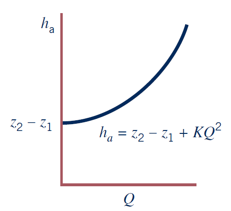
Fuente: Gerhart, P., Gerhart, A. y Hochstein, J. (2016). Munson, Fundamentals of Fluid Mechanics.
12
Antes de la animación · recuerden su práctica
Al cerrar la válvula de descarga de la bomba periférica del módulo, ¿qué le pasó a la corriente del motor?
Las bombas del módulo son periféricas, no centrífugas. Después veremos qué pasa en una centrífuga.
A
Subió
B
Bajó
C
No cambió
13
Punto de operación
Cerrar la válvula baja la potencia de la centrífuga y sube la de la periférica
Intersección
La bomba opera donde su curva corta la curva del sistema.
Más resistencia
Al cerrar la válvula, K sube: menor caudal y mayor cabeza. El bhp baja en la centrífuga y sube en la periférica.
14
Antes de la animación · lo vieron en la otra clase
Con dos bombas en serie, la cabeza no se duplica. ¿Cuál es la razón principal?
En la otra clase vieron que la teoría no se cumple. Aquí se busca el porqué.
A
Se pierde energía en la tubería entre las dos bombas
B
El caudal también sube y la fricción crece con Q²
C
En la práctica, las dos bombas nunca son idénticas
15
Punto de operación · Serie y paralelo, 1 de 2
En serie, la cabeza no se duplica
La curva sí se duplica
A un mismo caudal, se suman las cabezas: H(serie) = 2 H(Q).
¿Por qué no se duplica H?
El caudal no se queda igual: sube, la fricción crece con Q² y el punto se corre por la curva combinada. La cabeza sube 26 %, no 100 %.
Caso especial: la cabeza se duplicaría si el sistema fijara el caudal (curva del sistema vertical).
16
Punto de operación · Serie y paralelo, 2 de 2
En paralelo, el caudal no se duplica
La curva sí se duplica
A una misma cabeza, se suman los caudales: Q(paralelo) = 2 Q(H).
¿Por qué no se duplica Q?
Al subir el caudal, la fricción exige más cabeza y el punto se corre por la curva combinada. El caudal sube 34 %, no 100 %.
Caso especial: el caudal se duplicaría con un sistema plano (solo cabeza estática, sin fricción).
17
Punto de operación · Serie y paralelo, 3 de 3
¿Cuándo conviene serie y cuándo paralelo?
Sistema empinado → serie
Mucha fricción: tuberías largas o angostas, muchos accesorios.
Sistema plano → paralelo
Cabeza estática alta y poca fricción; también demanda variable.
Δz mayor que el cierre → solo serie
En paralelo la cabeza de cierre sigue siendo la de una bomba.
18
Parte 4 de 6
¿Cómo se lee un catálogo?
Diagramas de familia, nomenclatura y curvas por modelo
19
Diagrama de familia · DAB KDN
Cada recuadro es un modelo de bomba
Cómo se lee
Ejes logarítmicos de Q y H; cada recuadro es un modelo con su rango de impulsores.
Para qué sirve
Una selección preliminar: qué modelos cubren el par Q, H. Después se revisa la curva de cada candidato.
Fuente: DAB Pumps, catálogo técnico serie KDN, tabla gráfica de selección a 2900 rpm (redibujada)
20
Ejemplo · Goulds
El código de Goulds dice bocas e impulsor
2 × 3 − 10
2
Diámetro de la conexión de descarga: 2 pulgadas
3
Diámetro de la conexión de succión: 3 pulgadas
10
Admite impulsores de hasta 10 pulgadas de diámetro
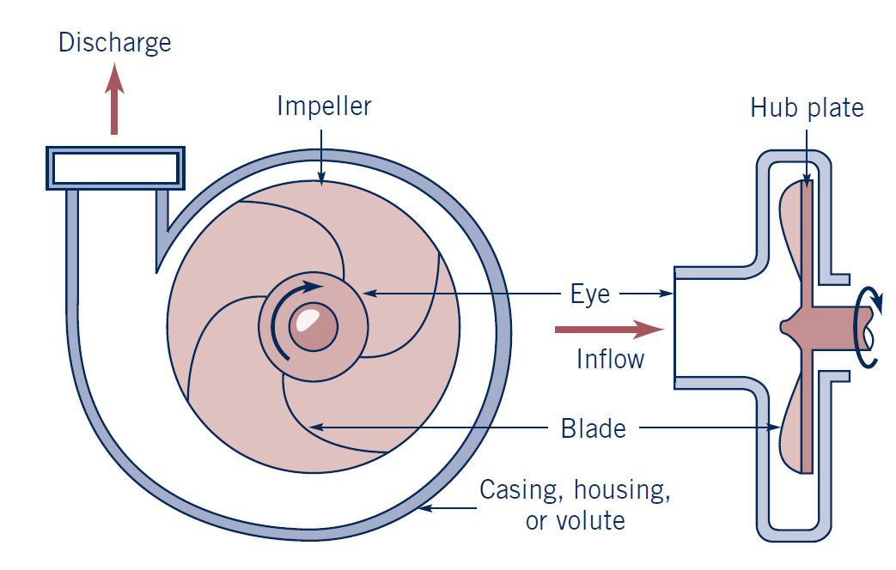
Fuente: Gerhart, P., Gerhart, A. y Hochstein, J. (2016).
21
Nomenclatura
No hay una nomenclatura estándar
El mismo tipo de código significa cosas distintas según el fabricante:
Goulds
2 × 3 − 10
descarga × succión − impulsor máximo, en pulgadas
Griswold
4 × 3 − 10
succión × descarga − impulsor, en pulgadas
DAB KDN (EN 733)
32-125
DN de descarga − tamaño nominal del impulsor, en mm. La 32-125 admite hasta Ø142 mm.
Antes de interpretar un código, revise el manual o catálogo del fabricante.
22
Del diagrama de familia al modelo · KDN 32/125.1
La curva del modelo en particular
Al seleccionar preliminarmente la bomba, se busca la curva característica del modelo en particular.
Cabeza y eficiencia · diámetro de impulsor
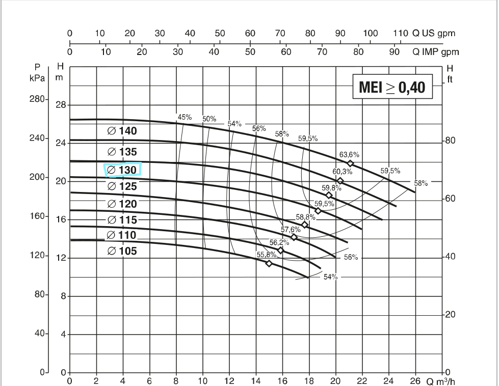
NPSH requerido
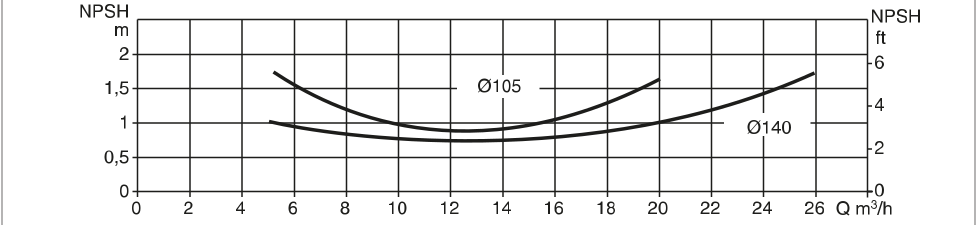
Potencia en el eje
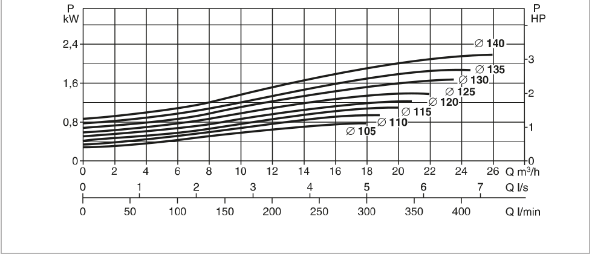
Fuente: DAB Pumps, catálogo técnico serie KDN, hoja KDN 32-125.1 a 2900 rpm (50 Hz)
23
Ejemplo · Griswold 4 × 3 − 10 A70
Al duplicar la velocidad, Q se duplica y H se cuadruplica
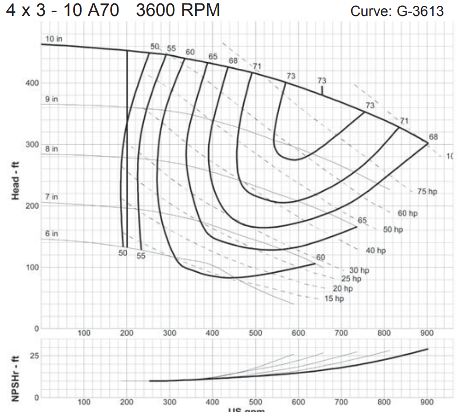
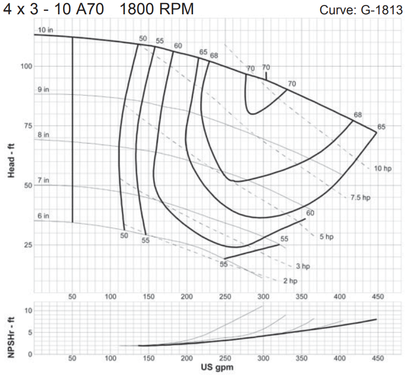
Qué observar
1
Una curva H–Q por cada diámetro
2
Las líneas de eficiencia
3
La curva de NPSH requerido, abajo
4
Cómo cambia todo al duplicar la velocidad
Curvas: Griswold Pumps, modelo 4 × 3 − 10 A70, curvas G-3613 (3600 rpm) y G-1813 (1800 rpm).
24
Ejemplo · Griswold 4 × 3 − 10 A70
Más caudal, más NPSH requerido
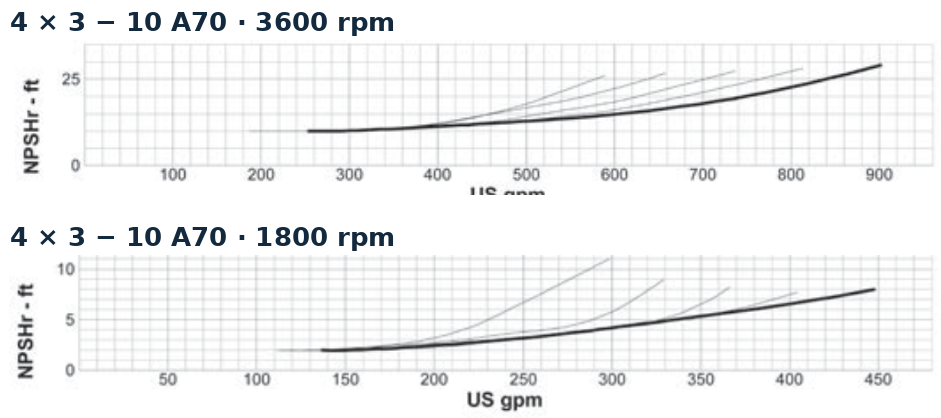
Velocidad de flujo
Más velocidad en el ojo del impulsor, más energía cinética.
Presión local
Esa energía sale de la presión: baja la presión local y hace falta más NPSH para no cavitar.
Curvas: Griswold Pumps, modelo 4 × 3 − 10 A70, curvas G-3613 (3600 rpm) y G-1813 (1800 rpm).
25
Para un mismo caudal
Menor diámetro del impulsor, mayor NPSH requerido
Mayor velocidad del impulsor, mayor NPSH requerido
26
Parte 5 de 6 · Ejemplo guiado
¿Cuál bomba compramos?
El reto del inicio, paso a paso con el catálogo DAB KDN
27
Ejemplo guiado
El reto: 16 m³/h a 19 m
Caudal
16 m³/h
Cabeza total
19 m
La ruta del ejemplo
1 Familia
2 32/125.1
3 32/125
4 NPSH y potencia
5 Digitalizar
6 Interpolar
7 Motor
Fuente: DAB Pumps, catálogo técnico serie KDN, curvas a 2900 rpm (50 Hz)
28
Paso 1 de 7 · Diagrama de familia
¿Qué modelos cubren el punto?
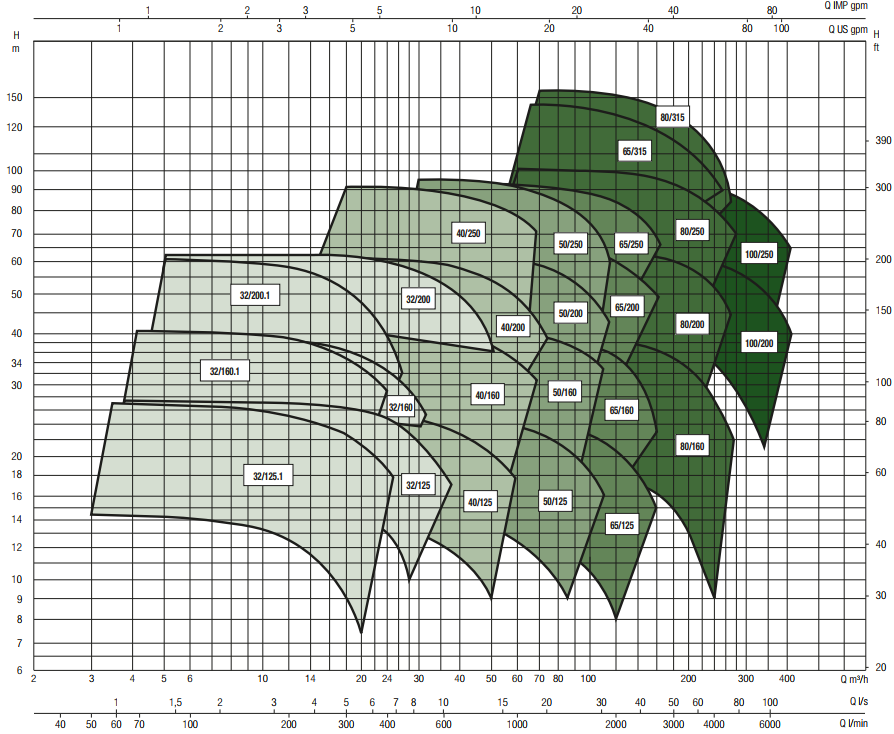
Ubicar el punto
Q = 16 m³/h y H = 19 m sobre el diagrama.
Candidatos
32/125.1
32/125
Fuente: DAB Pumps, catálogo técnico serie KDN, curvas a 2900 rpm (50 Hz)
29
Paso 2 de 7 · Primer candidato
KDN 32/125.1
Leer en el punto de diseño
1
Diámetro graficado que cubre el punto
2
Eficiencia en ese punto
3
Caudal en el BEP de ese diámetro, para comparar con el otro candidato

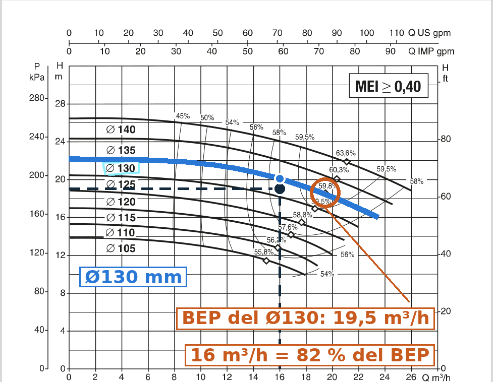
Fuente: DAB Pumps, catálogo técnico serie KDN, curvas a 2900 rpm (50 Hz)
30
Paso 3 de 7 · Segundo candidato y criterio
KDN 32/125
Mismo ejercicio
Diámetro graficado, eficiencia y caudal en el BEP, en Q = 16 m³/h, H = 19 m.
Criterio
Se elige la 32/125.1: su caudal de operación está más cerca del caudal en el BEP (82 % frente a 67 %).
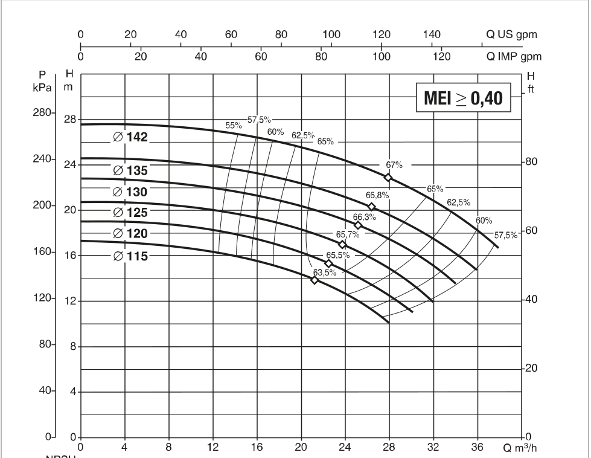
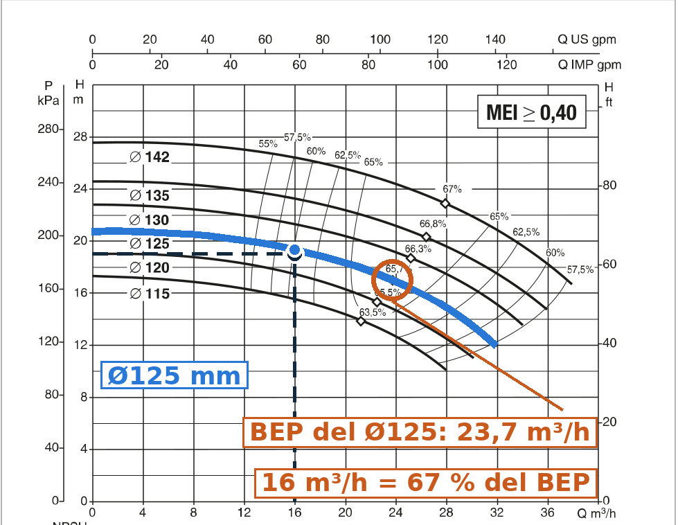
Fuente: DAB Pumps, catálogo técnico serie KDN, curvas a 2900 rpm (50 Hz)
31
Paso 4 de 7 · KDN 32/125.1
El Ø130 no tiene curva de NPSH propia
El problema
El impulsor elegido, Ø130 mm, tiene curva de potencia pero no de NPSH: la hoja solo da Ø105 y Ø140 mm.
La salida
Digitalizar las dos curvas de NPSH e interpolar.
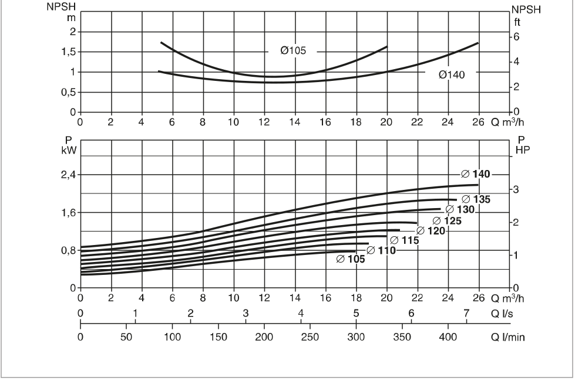
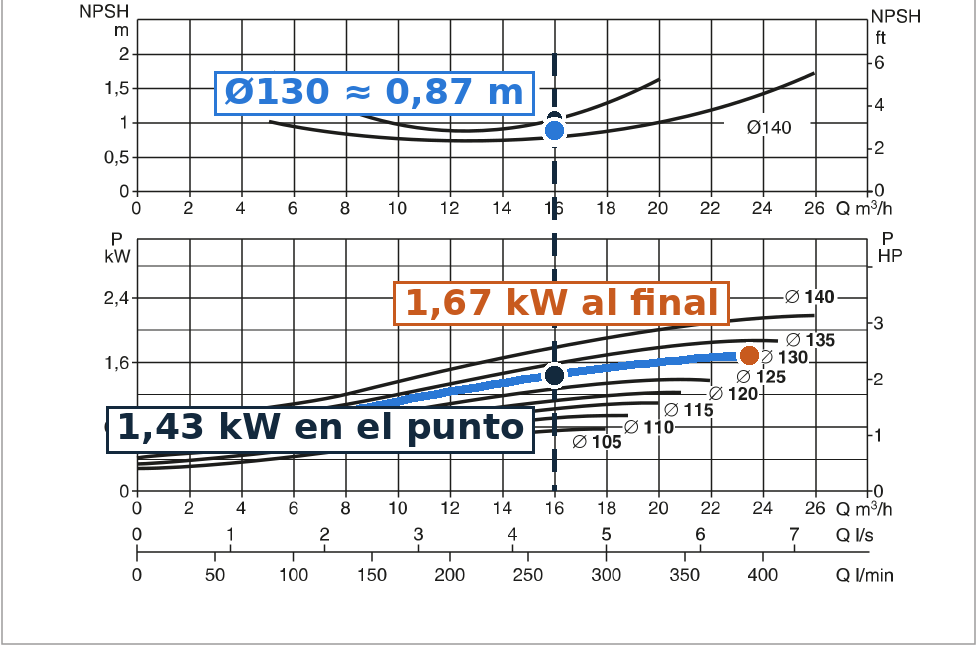
Fuente: DAB Pumps, catálogo técnico serie KDN, curvas a 2900 rpm (50 Hz)
32
Paso 5 de 7 · Digitalizar
Cinco puntos alrededor de 16 m³/h bastan
Ø105 mm
| Q (m³/h) | NPSH_R (m) |
|---|---|
| 14,0 | 0,914 |
| 15,2 | 0,983 |
| 16,0 | 1,05 |
| 17,0 | 1,17 |
| 18,0 | 1,30 |
Ø140 mm
| Q (m³/h) | NPSH_R (m) |
|---|---|
| 14,0 | 0,754 |
| 15,2 | 0,777 |
| 16,0 | 0,800 |
| 17,0 | 0,834 |
| 18,0 | 0,880 |
Curvas: DAB Pumps, catálogo KDN, 2900 rpm (50 Hz). Puntos digitalizados con ScanIt, KDN 32/125.1.
33
Paso 6 de 7 · Interpolar
Se interpola en el diámetro, al mismo caudal
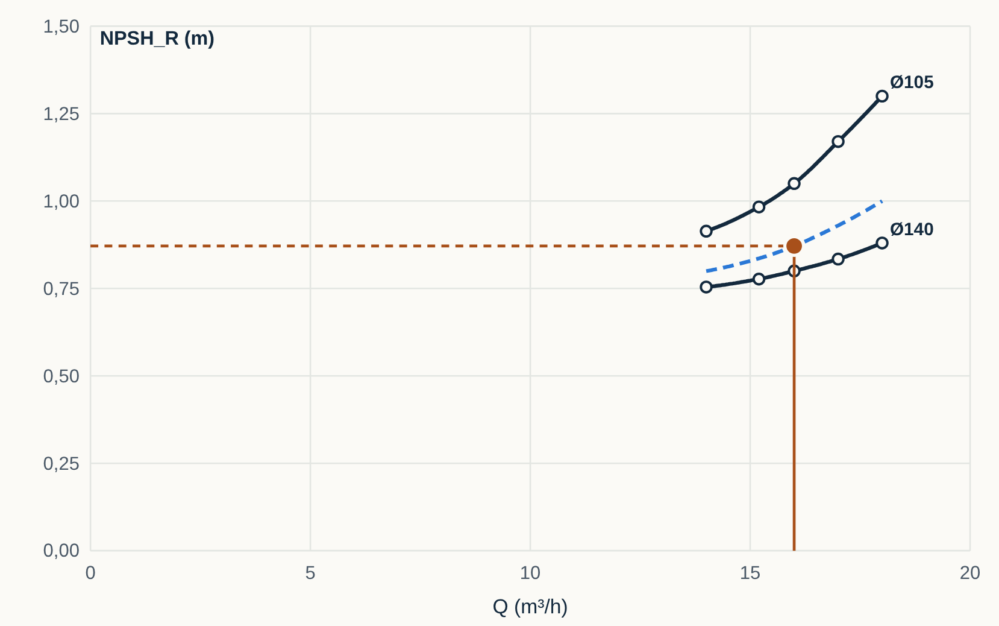
Entradas
Los puntos digitalizados de Ø105 y Ø140 mm, y el diámetro objetivo.
Ø130 mm a 16 m³/h
≈ 0,87 m
NPSH requerido
Datos: DAB Pumps, catálogo técnico serie KDN, 2900 rpm (50 Hz)
34
Antes de elegir el motor
En el punto de diseño, la bomba consume 1,43 kW. ¿Alcanza un motor de 1,5 kW?
A
Sí, sobra un 5 %
B
No
C
Depende
35
Paso 7 de 7 · Motor
El motor se elige con el final de la curva
Alimentación 3 × 230-400 V, 50 Hz
| Potencia (kW) | Carcasa | Selección |
|---|---|---|
| 0,75 | MEC 80 | |
| 1,1 | MEC 80 | |
| 1,5 | MEC 90S | |
| 2,2 | MEC 90L | Seleccionado |
| 3,0 | MEC 100L | |
| 4,0 | MEC 112M |
Conexiones
DNA 50
succión
DNM 32
descarga
El 32 del código es la descarga.
Se elige el MEC 90L (2,2 kW): la curva Ø130 llega a 1,67 kW al final; con 1,5 kW se sobrecargaría.
Fuente: DAB Pumps, catálogo técnico serie KDN (datos eléctricos a 50 Hz)
36
Parte 6 de 6 · Trabajo en clase
Ahora les toca a ustedes
Trabajo en grupos: seis casos con el mismo catálogo
37
Trabajo en grupos
Instrucciones
Para cada uno de los 6 casos, use las curvas de rendimiento DAB KDN (2900 rpm) y reporte:
1
Modelo de la bomba
Ej.: KDN 40-250
2
Diámetro del impulsor
Ej.: Ø245 mm
3
NPSH requerido
Leído de la curva, en metros
4
Potencia y motor comercial
Potencia absorbida (kW) y carcasa. Ej.: 11 kW, MEC 160M
Si más de un modelo cubre el punto, elija el que opere más cerca de su caudal en el BEP.
El motor debe cubrir la potencia al final de la curva del impulsor, no solo la del punto de diseño.
38
Trabajo en grupos
Matriz de casos
Datos de entrada
Entregables: complete cada casilla
| Caso | Q (m³/h) | H (m) | Modelo | Impulsor (mm) | NPSH_R (m) | Motor |
|---|---|---|---|---|---|---|
| 1 | 15 | 34 | ||||
| 2 | 30 | 45 | ||||
| 3 | 60 | 28 | ||||
| 4 | 80 | 45 | ||||
| 5 | 80 | 20 | ||||
| 6 | 100 | 70 |
Catálogo: DAB Pumps, serie KDN, curvas a 2900 rpm (50 Hz)
39